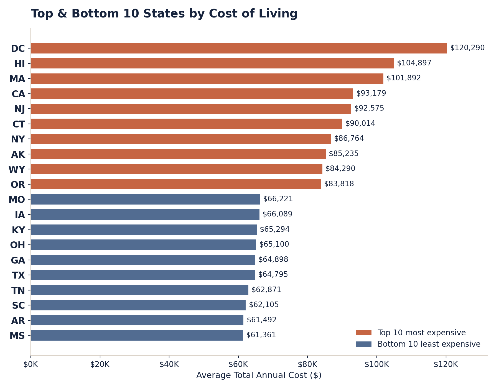
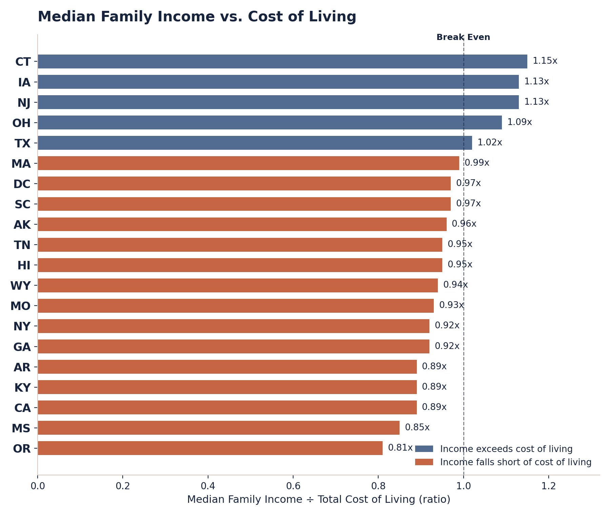
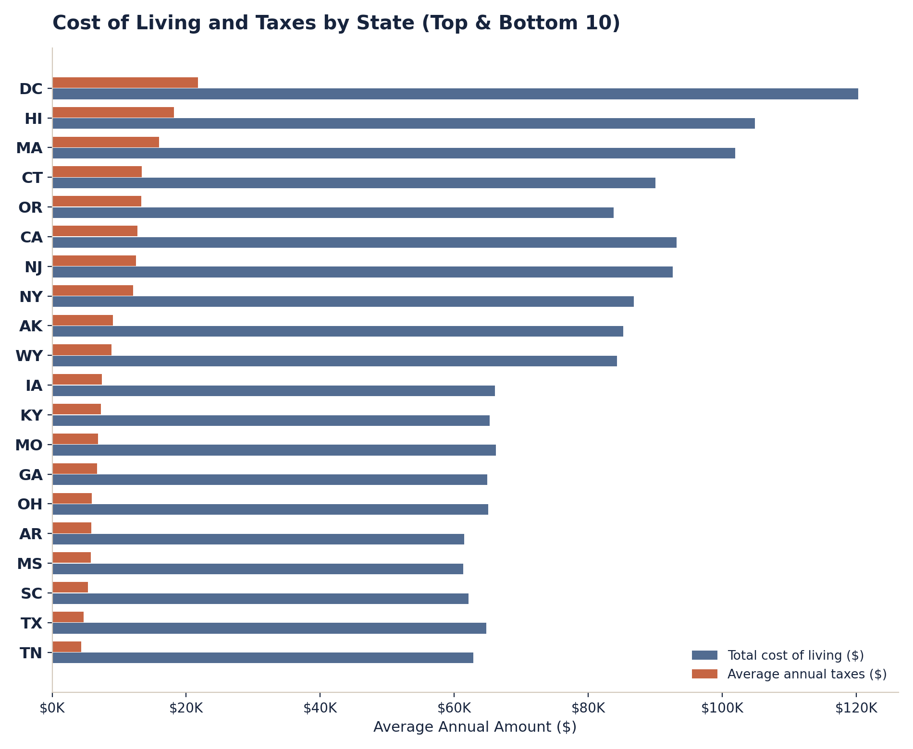

Cost of Living & Tax Analysis
Role: Sourced and organized the underlying data, built the calculated Income-to-Cost ratio, and designed the full interactive Tableau dashboard.
View the live Tableau dashboard ↗Project resources
Explore the live dashboard.
The published dashboard lets you compare all fifty states directly, and filter cost against tax burden.
Where does income actually go furthest, once cost of living and taxes are accounted for?
Raw income comparisons across states are common, but they miss the other half of the equation: what that income actually buys once housing, food, healthcare, and state tax burden are factored in. This independent project set out to build a tool that could answer the affordability question properly, not just the income question.
31,430 household-level cost-of-living estimates spanning housing, food, and healthcare across all 50 states plus D.C., paired with state median family income and average annual tax burden, organized into a single model for cross-state comparison.
Averaged figures across all household compositions and metro/county records for each state, then built a calculated Income-to-Cost ratio in Tableau (median family income ÷ average total cost of living, where a ratio above 1.0 means income exceeds typical costs). Designed the dashboard around that ratio: a Top & Bottom 10 cost comparison, a U.S. map, a cost/tax breakdown, and a what-if affordability model that lets a viewer adjust their own income assumptions and see how state rankings shift.

Income-to-Cost ratio: real dashboard outputRaw income is a poor predictor of affordability on its own.
Only six states in the comparison set, Connecticut, Iowa, New Jersey, Ohio, Texas, and (fractionally) Massachusetts, have a median family income that meets or exceeds the average cost of living. Oregon is the most strained: median income there covers only about 81% of average costs, followed by Mississippi (85%) and California (89%), meaning households in some of the most expensive states are earning below what living there actually requires. Higher cost of living and higher taxes also tend to move together: D.C., Hawaii, and Massachusetts carry both the largest total cost footprint and the highest average tax burden (over $15,000/year), while Tennessee stands out as an exception among the least-expensive states, combining a low cost of living with the lowest average tax burden in the comparison set ($4,343).
Designed the dashboard so the Income-to-Cost ratio, not raw income or raw cost, is the default lens a viewer sees first, with the what-if model letting anyone test their own income against any state's cost structure rather than relying on a single static ranking.
This is a personal data-storytelling project, not a client or business engagement, so the impact is the tool itself: a published, interactive Tableau Public dashboard that turns income, housing, food, healthcare, and tax data into one usable affordability answer, viewable and adjustable by anyone.
The analysis behind the dashboard: the full cost-of-living breakdown and the cost/tax relationship by state.

This project pushed me past static charts into thinking about interactivity as part of the storytelling itself. The next iteration I'd want to build is a time dimension, so the ratio could be tracked year over year instead of as a single snapshot.